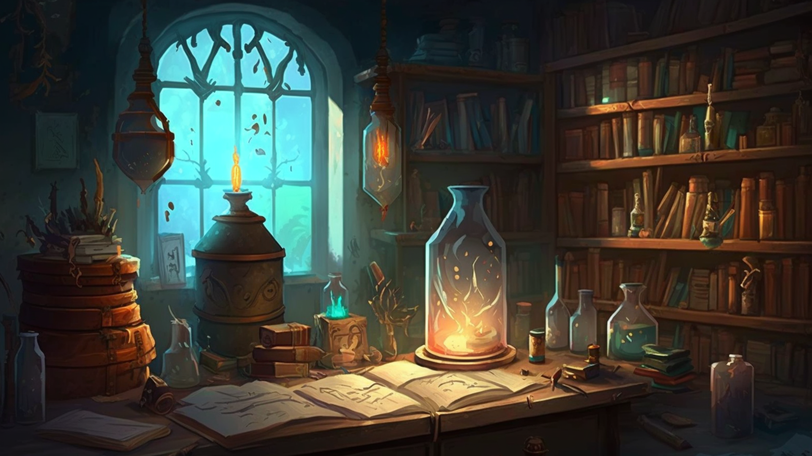
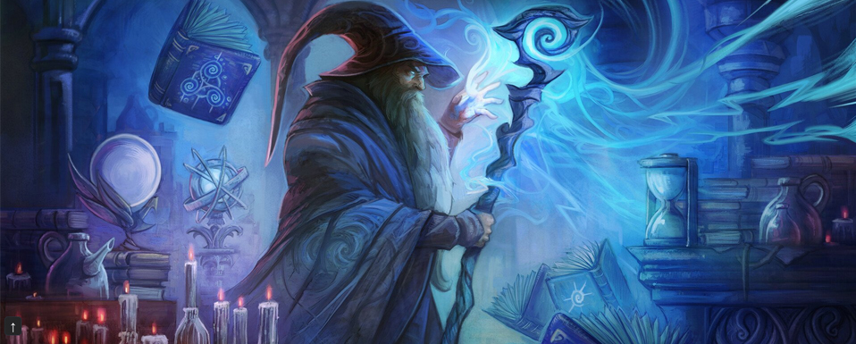
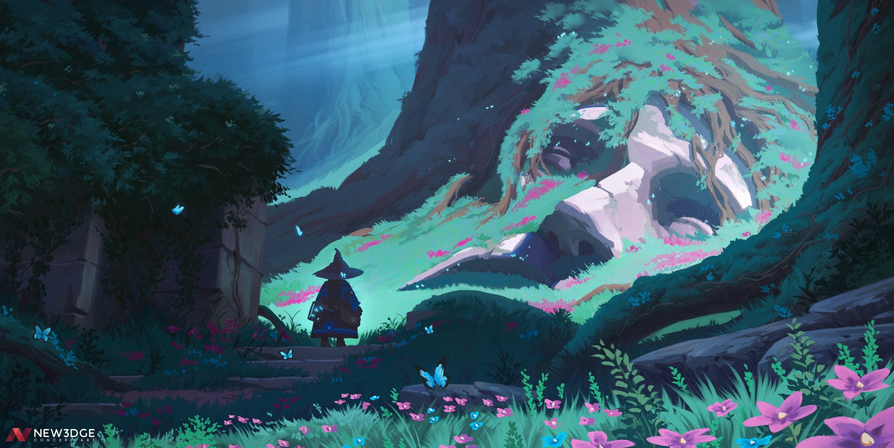

Salones de Conjuracion
Salones de Conjuracion

¿Quieres ver los Salones de Conjuración? Aquí aprenderás a invocar fuerzas mágicas, dominar hechizos poderosos y descubrir los secretos de la magia ancestral. Cada salón está diseñado para que desarrolles tus habilidades al máximo bajo la guía de expertos.
Más información
Nuestro Director
Conoce a nuestro Director, una figura legendaria cuyo conocimiento en magia y combate ha forjado generaciones de héroes. Su sabiduría, forjada en incontables batallas, te guiará en el dominio de las artes mágicas y en el enfrentamiento de los desafíos más oscuros.
Más información
Cronicas del Bastion
¿Te interesa la historia de la escuela? Entra en las Crónicas del Bastión y descubre los secretos y hazañas que han forjado el legado del Jardín de Balamb. Conoce los momentos clave que han definido a esta institución y a sus valientes alumnos.
Más información
Entrenamientos de Combate
¿Quieres saber más sobre los entrenamientos de combate? Descubre en detalle cómo nuestros métodos forjan a los mejores guerreros y magos. Prepárate para superar desafíos, dominar la espada y controlar la magia en batallas reales, todo bajo la supervisión de nuestros expertos.
Más información